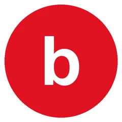

Experience
Nine roles across engineering, research and teaching. What I studied, what I am good at, and what I build with.
Engineering
Software Engineering Intern
- Instrumented the Gemini generation pipeline inside a full-stack TypeScript platform to capture latency, token usage and output length, identifying response size as the primary bottleneck on a real-time lecture-to-slides product.
- Designed feature-flagged experiments that isolated the cost of each prompt component, and recommended context caching to cut redundant token usage without losing product functionality.

Data Analytics (AI) Extern
- Deployed GPT- and Claude-based NLP pipelines using embeddings and topic modelling across 200,000+ customer reviews, choosing prompt-based inference so experiments could be changed and rerun quickly.
- Built Python evaluation workflows around precision, recall, consistency checks and error handling, cutting manual reporting effort by 40% and making the results trustworthy on noisy text.
Software Engineering Intern
- Delivered a production iOS application with biometric authentication, encrypted data flows and low-latency API communication, supporting reliable data capture for 10,000+ enterprise users.
- Optimised real-time synchronisation through Firebase and Core Data, improving data reliability and cutting workflow turnaround time by 25% under concurrent use.
Research
Research Assistant, Agent AI and Geospatial Simulation
- Integrate agent-based AI into an immersive pedestrian simulation, so that virtual agents read their own position and orientation, the environment around them and what nearby agents are doing, in real time.
- Model the decision logic that turns those spatial and social cues into gestures, movement and interaction, which is what makes behaviour in a virtual street read as behaviour rather than as pathfinding.
Research Assistant, Decimal Point Learning Game
- Analyse a decade of Decimal Point studies to work out how game design, self-explanation, feedback and learner agency affect engagement and middle-school mathematics learning.
- Synthesise published findings from classroom experiments involving 1,500+ students, identifying the design principles that hold up, the limits of the existing research, and where an AI-supported system could help.
Undergraduate Research Assistant
- Translated Python algorithms into MATLAB, ensuring accurate replication of research results, by implementing NG-RC models with Dr. Yan Li for AI-driven forecasting of dynamical systems.
- Enhanced mathematical functions and optimised time-delay features, boosting forecasting accuracy by 15% and lowering runtime through refined model structures and streamlined code.
Teaching
Graduate Computer Science Course Assistant
- Review and debug 70+ Python assignments weekly, identifying logical, runtime and data-structure errors, and returning feedback specific enough to act on.
- Lead weekly office hours, working through problems one to one and strengthening the programming and problem-solving habits underneath them.
CS and Math Learning Assistant
- Supported undergraduate students through weekly office hours and structured recitation sessions, focusing on problem-solving, debugging and core concept reinforcement in computer science and mathematics.
- Guided students in algorithmic thinking, programming fundamentals and discrete maths concepts, improving assignment accuracy and conceptual understanding.
Academic Facilitator, Women in Engineering Program
- Designed and implemented study strategies and individualised learning plans with incentive-based milestones, improving course completion rates and student motivation.
- Facilitated collaborative group review sessions, increasing participation and strengthening conceptual understanding across engineering coursework.
What I studied
Coursework, and the thing on this site that came out of it.
- Artificial Intelligence the medical chatbot’s retrieval design
- Machine Learning the fake news classifier
- Natural Language Processing the Beats review pipelines
- Deep Learning the face emotion network
- Operating Systems the MDADM file manager
- System Programming the same, in C
- Computer Organization and Design the 32-bit MIPS pipeline
- Digital Design the same, on an FPGA
- Object-Oriented Programming the Java desktop applications
- Data Structures and Algorithms everything else, eventually
- Agile and DevOps Methodologies how Passdown and Standby got shipped
- Game Theory nothing yet
What I am good at
Making concurrency behave
Passdown holds a claim for ten minutes and enforces it in the database, not the interface. Twelve simultaneous claims, ten test rounds, exactly one winner each time.
Finding the real bottleneck
At WONKLedge the obvious suspects were the model and the network. Instrumenting the pipeline put it in output length, and context caching followed from that rather than from a guess.
Evaluating, not just building
The Beats pipelines came with precision, recall and consistency checks around them. On 200,000 noisy reviews that is the part that decides whether any of the output can be believed.
Explaining it afterwards
Seventy Python assignments a week for three years, and three years of office hours before that. It is the fastest way to find out which of your explanations only worked on you.
What I build with
AI and machine learning
Retrieval systems that answer out of real documents, and the evaluation that tells you whether they did.
- PyTorch
- TensorFlow
- Scikit-learn
- Hugging Face
- Transformers
- LangChain
- RAG
- Embeddings
- Pinecone
- FAISS
- OpenAI API
- Fine-tuning
- Prompt Engineering
- Model Evaluation
Languages
Python for anything with data in it, Swift when it has to run on a phone, C when something underneath is wrong.
- Python
- Java
- C / C++
- JavaScript
- TypeScript
- Swift
- SQL
- MATLAB
- R
Backend and systems
The half nobody sees: the endpoint, the schema behind it, and the box it runs on.
- REST APIs
- FastAPI
- Flask
- Node.js
- Microservices
- PostgreSQL
- MongoDB
- Supabase
- Prisma
- Firebase
- Linux
Frontend
Enough to build the whole thing rather than hand the interesting half to somebody else.
- React
- Next.js
- Angular
- SwiftUI
- HTML
- CSS
- Tailwind
Cloud and delivery
Getting it off a laptop and keeping it there, which is where most side projects quietly stop.
- AWS
- Google Cloud
- Azure
- Docker
- Kubernetes
- CI / CD
- Vercel
- Git
- Agile / Scrum
Data
Loading it, cleaning it, and finding out what it is actually shaped like before trusting a model with it.
- Pandas
- NumPy
- xarray
- Matplotlib
- Jupyter
- Data Cleaning
- Experiment Design